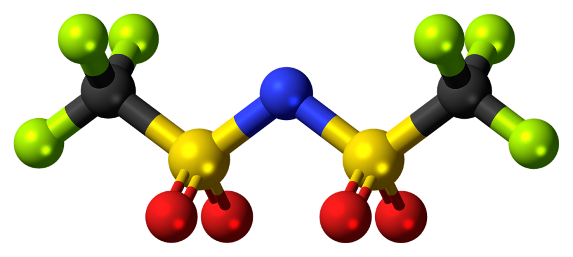

WST20
Willkommen
Themen
Der Atomare Aufbau
Eisen-Kohlenstoff-Diagramm
Festigkeitssteigerung bei Metallen
Chemische Bindungen bei Metallen und Nichtmetallen
Bindungen in Polymeren und Strukturbildung
Einteilungsschema für Kunststoffe
Zugversuch
Härteprüfung
Aufgaben
Grundlegende Begriffe und Zusammenhänge
Gegenstand und Bedeutung der Werkstoffkunde
Stellung und Bedeutung der Werkstoffkunde in der Technik
Entwicklungsrichtungen der Werkstofftechnik
Wie lassen sich die unterschiedlichen Eigenschaften der Werkstoffe erklären?
Anforderungen an Werkstoffe
Metallische Werkstoffe
Metallkunde
Struktur und Verformung der Realkristalle
Verfestigungsmechanismen
Vorgänge im Metallgitter bei höheren Temperaturen (Thermisch aktivierte Prozesse)
Legierungen (Zweistofflegierungen)
Die Legierung Eisen-Kohlenstoff
Abkühlkurve und Kristallarten des Reinesens
Erstarrungsformen
Das Eisen-Kohlenstoff-Diagramm (EKD)
Einfluss des Kohlenstoffs auf die Legierungseigenschaften
Stähle
Erzeugung und Klassifizierung
Allgemeine Verwendung
Baustähle höherer Festigkeit
Stähle mit besonderen Eigenschaften
Stahlgruppen
Stahlguss
Wärmehandlung der Stähle
Allgemeines
Glühverfahren
Härte und Vergüten
Aushärten
ThermomechanischeVerfahren
Verfahren der Oberflächenhärtung
Eisen-Gusswerkstoffe
Übersicht und Einteilung
Allgemeines über die Gefüge- und Graphitausbildung bei Gusseisen
Gusseisen mit Lamellengraphit GJL (DIN EN 1561/11)
Gusseisen mit Kugelgraphit GJS (DIN EN 1563/11)
Temperguss GJMW/GJMB (DIN EN 1562/12)
Gusseisen mit Vermiculargraphit
Sonderguss
Nichteisenmetalle
Allgemeines
Bezeichnung von NE-Metallen und -Legierungen
Aluminium
Kupfer
Magnesium
Titan
Nickel
Nichtmetallische-anorganische Werkstoffe
Kunststoffe (Polymere)
Allgemeines
Eigenschaften
Gebräuchliche Kunststoffe
Verbundstrukturen und Verbundwerkstoffe
Werkstoffe besonderer Herstellung oder Eigenschaften
Pulvermetallurgie, Sintermetalle
Schichtwerkstoffe und Schichtherstellung
Lager- und Gleitwerkstoffe
Korrosionsbeanspruchung und Korrosionsschutz
Überlegungen zur Werkstoffauswahl
Werkstoffprüfung
Aufgaben, Abgrenzung
Prüfung von Werkstoffkennwerten
Mechanische Eigenschaften bei statischer Belastung
Dynamische Belastung
Zyklische Belastung
Messung der Härte
Thermische Verfahren
Prüfung von Verarbeitungseigenschaften
Untersuchung des Gefüges
Zerstörungsfreie Werkstoffprüfung und Qualitätskontrolle
Überprüfung der chemischen Zusammensetzung
Klausurthemen
Einteilung der Werkstoffe
Primär- und Sekundärstruktur
Übersicht Metalle
Millersche Index
Gitter
Gitterbaufehler
Normal- und Schubspannung
Mechanismen zur Festigkeitssteigerung
Unterschied zwischen Metall- und Ionenbindung
Übersicht Kunststoffe
Technologische Einteilung von Kunststoffe
Bindungsarten in Kunststoffen
Elemente hauptsächlich in Polymeren
Physikalische Eigenschaften in Polymeren
Unterschied zwischen amorphe und teilkristalline Thermoplaste
Nebenvalenzkräfte
.md
.pdf
Contents
Was ist der Zugversucht?
Welche Kennwerte werden beim Zugversuch ermittelt?
Zugversuch
¶
Was ist der Zugversucht?
¶
Welche Kennwerte werden beim Zugversuch ermittelt?
¶
previous
Einteilungsschema für Kunststoffe
next
Härteprüfung